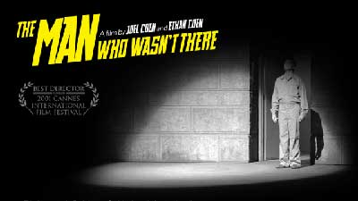

Im bardziej się przyglądasz, tym mniej widzisz
Jan Przyłuski
22-01-2002
Coenowie znów zabawiają się filmem noir. Przynajmniej tak się wydaje na pierwszy rzut oka. Przekonują do tego mocne gradienty, wyrazistość czerni i bieli w świetnych zdjęciach Deakinsa; ich chciałoby się powiedzieć ikoniczność rodem z klasycznych obrazów tego gatunku. Niewzruszona twarz Billy’ego Boba Thorntona wdziera się w pamięć prawie tak mocno jak filmowe oblicze Humphreya Bogarta. Obaj też palą podobnie. Ale Człowiek, którego nie było nie jest po prostu kolejnym hołdem złożonym czarnemu kinu gangsterskiemu, jakim była Ścieżka strachu (1990). Ed Crane to nie gangster z Chicago (obojętnie czy to z czasów prohibicji czy ulubionego przez Coenów okresu lat czterdziestych i pięćdziesiątych), który zakłada własny gang, żeby się wyrwać z nizin. Historia małomównego fryzjera z jakiejś amerykańskiej dziury pod Sacramento, który szantażuje Wielkiego Dave’a, właściciela sieci sklepów i kochanka swojej żony, żeby zdobyć szmal, dokładnie 10.000 $, na niepewny interes pralni chemicznych, czy tego chcemy czy nie, oddala nas od porównań z Sokołem maltańskim Hustona. Oj, braciszkowie Coen naprawdę lubią pastisze - tego już dowiedli. Co w takim razie, poza charakterystycznym coenowskim humorem i misterną siatką zdarzeń (stąd Glob za scenariusz) wyróżnia najnowszy ich obraz?
Człowiek, którego nie było to przede wszystkim film postaci. W tej zaskakującej historii anty-bohatera Eda - co doskonale uwidacznia praca operatorska Rogera Deakinsa - celowo kreowane jest spojrzenie od wewnątrz. To on, Deakins, człowiek który pracuje z braćmi od lat i robił zdjęcia do Bartona Finka, Fargo, Big Lebowskiego, zdecydował się zarzucić efektowny szeroki ekran (tj. w proporcjach 2.4:1) i przejść na Super 35, po to żeby obrazy postaci w przestrzeni zachowały atmosferę bliskości. Aby nie oddalić widza od tytułowego człowieka, konieczne i znacznie lepsze okazało się takie właśnie spojrzenie niż anamorficzne efekciarstwo, które znacznie spłaszczyłoby obraz. W takich warunkach minimalistyczna w swej formie gra aktorska Thorntona stała się sugestywną kreacją, w której każdy gest, każde spojrzenie czy pociągnięcie papierosa nie pozostaje obojętne.
Ed Crane to szczególny charakter. Jest człowiekiem, który się nie objawia, nie uczestniczy, niewiele mówi. Prawie nie istnieje. A jednak to on jest tu najważniejszy. O ile w klasycznym czarnym kinie gangsterskim bohater i jego czyny obudowane były kontekstem społecznym, o tyle w Człowieku najistotniejszy wydaje się być ten właśnie przypadek i to konkretne morderstwo, morderstwo "domowe". Listonosz zawsze dzwoni dwa razy to oczywista inspiracja. Twórczość Jamesa M. Caina, która była jednym ze źródeł pierwszego filmu Coenów, debiutanckiego Śmiertelnie prostego, po raz kolejny staje się trampoliną dla ich wyobraźni. Historia bohatera, który morduje, a następnego dnia jakby nigdy nic wychodzi do pracy zyskuje tu nowy wymiar. Bo przecież Listonosz zawsze dzwoni dwa razy czyli zabijanie między drugim daniem a podwieczorkiem to nie to samo co przypadek Crane’a, o którym plakaty reklamujące film mówią, że "morderstwo nie było w jego stylu." Jak widać bracia nie pozwalają nam myśleć schematami. Nie lubią by ich szufladkować i pewnie stąd tak chłodny odbiór filmu w kręgu pozaartystycznym (bo przecież w Cannes zdobył Złota Palmę za reżyserię). Jak pisze Andrew Sarnis z New York Observer: "W Człowieku, którego nie było jest wszystko czego potrzeba, w artystycznym sensie, ale niech nigdy nie pretenduje on do bycia miłym filmem rozrywkowym." I jeśli spojrzeć na treści jakie Coenowie przeszmuglowali do filmu i stan energetyczny widowni po seansie, wszystko wskazuje na to, że to prawda.
Film noir przedstawiał problem bezsensownego okrucieństwa przez symptomatyczny dialog z filmu Mordercy Siodmaka, w którym świadek masakry na pytanie "O co tutaj chodzi?", dostaje odpowiedź - "O nic." Coenowie stawiają tu inne pytania. "What kind of man are you? (Jakiego rodzaju człowiekiem ty jesteś?)" - wykrzykuje szwagier, gdy dowiaduje się kto zabił, a tekst ten powtarza się jeszcze parę razy. Odpowiedź nie pada, a widz też nie ma tu nic na talerzu. Filmowy adwokat między wierszami daje nam coenowski wykład o poznaniu: "Im bardziej się przyglądasz, tym mniej widzisz."
Pomysł na film o fryzjerze, jak mówi Joel Coen, wziął się z plakatu ich filmu z 1984 roku tj., z Hudsucker Proxy, na którym widniała głowa z typową dla lat 50-tych "wylizaną" fryzurą. To był pretekst. Powstał film, którego jeszcze nie było, po którym widz na pewno nie jest człowiekiem, który wiedział za dużo.